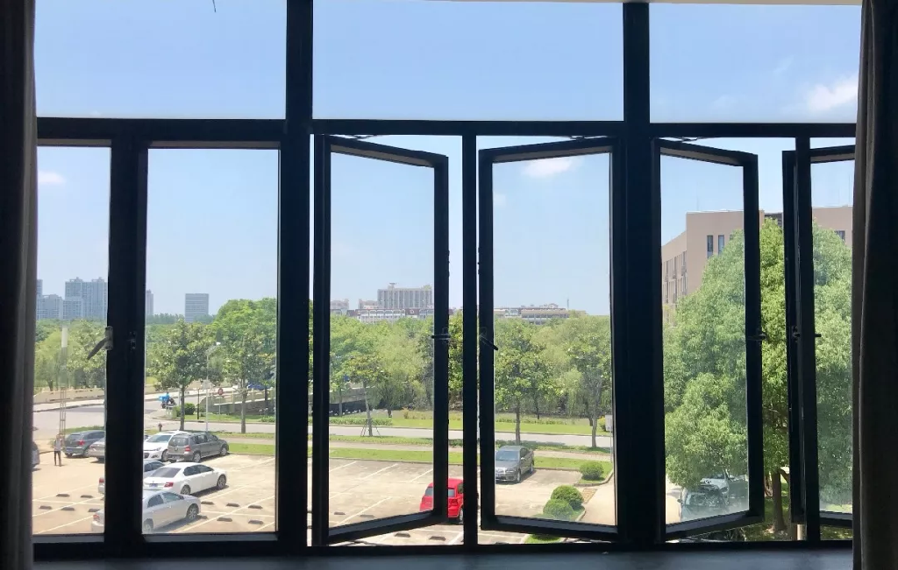
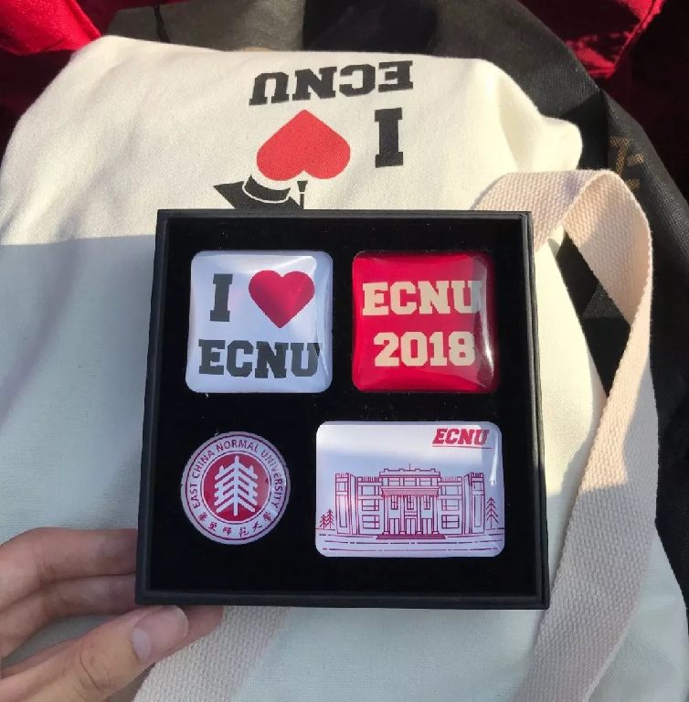
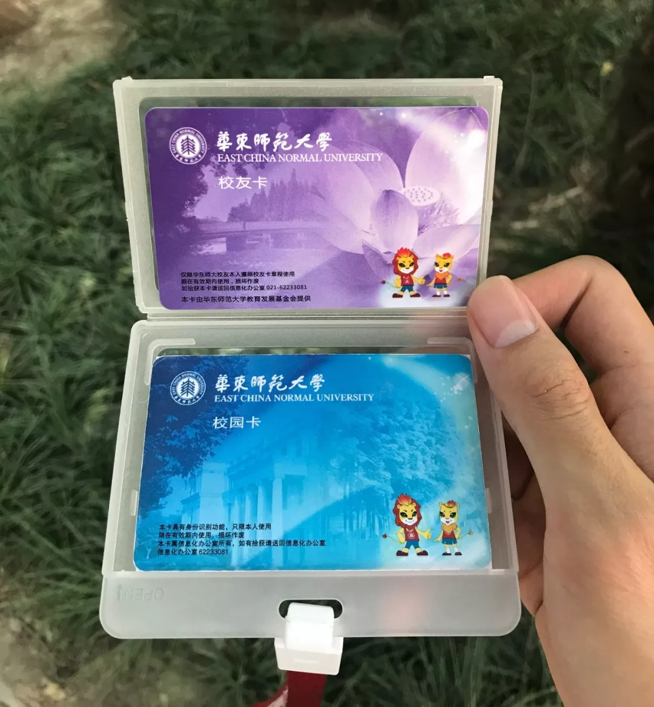

今年毕业，我倒没什么强烈的不舍与难过。
经历过很多次毕业，在多次分别之后，自己好像习以为常。
真正叫人难过的从来都不是有过盛大仪式的好好道别，令人难过不舍的总是那些轻易被时间带入历史，悄然无声的告别。
毕业的六月过得很快。
想让时间慢一点，再看看学校的一草一木。
在宿舍静静地看一次夕阳，摇曳的枝头，每个傍晚被拉长的影子，昏黄的光。
穿过丽娃河旁浓密的树林小道去图书馆，阳光斑驳，鸟鸣连绵，安静又洒脱。
骑着自行车，在樱桃河的桥上，晃晃悠悠地迎接阳光。
闵行的毕业花儿开了一片，丽娃河的荷花含苞待放。
迁校区时留下的那个千叶吊兰，宿管阿姨接过去，走了几步又回来说，“我放在洗手池边，你们回来的时候还能看到”。
去理科大楼，去图书馆逸夫楼，去文科大楼的顶层去找制高点，想拍一个不同的视角，可惜门都紧闭着。紧闭的不是那一扇扇门，是不会再有的心境与时光。
不久前，坐校车离开校园的场景历历在目，一个转弯，风景不见，校园都离我远去。熟悉的路上行走的陌生人们，背对着的，正对着的，都与我无关了。
↑这个视频太不清楚了，点击链接看1080P的吧
大学四年就这样过去，想来也挺充实，也让我知足。
我曾办过一年多的周末影院，也牵挂了近四年，办活动事小，办好活动事大，我更愿意把它看作某种意义上的“创业”，因为它也算是把自己的设想落实到行动。因为它，我能够在校广播站接受过一次采访，我愿意去谈很多笔赞助。特别感谢所有我那一届举办过周末影院的每一位干事，我自以为对你们要求严格——那一年总共完成了近百件宣传作品——也确实收到一些技术上，工作态度上的感谢——但令我意外的还是，我这样的工作狂也能和你们成为朋友，开心。
我也曾因为对学校快递现状的不满，写下《快递给我的悲伤那么大》，当天几千人阅读，几百人转发，很多人后台留言——那是我第一次切身感受到了文字在现实生活中所带来的力量，我记得之后的座谈会上后勤部老师握得紧紧的手，他道谢时我有点诧异，我也记得会上那个阻挠提建议的同学——有时候，现实可以很滑稽。我不知道后来快递问题的改善到底和我的微信稿有多大的关系，但我相信，当越来越多的人在乎起自己利益的时候，我们的集体利益就不会轻易地受损。
能够推免复旦直博实属运气不错，一如四年前的自招，我把这些幸运归结于冥冥之中的某种缘分。有缘分的绝不仅是这一结果，还有专业课程学习的四年里，遇到的许多敬业而热忱的好老师，比如悉心指导毕业论文同时能给予我力量的孙老师，比如上课风趣而细致的窦老师，比如一周三次，每次两节课，常常写满四张黑板的高数王老师……他们身体力行，言传身教，在专业知识之外，也用自己的行动与态度感染着我。除了系里授课的老师，C语言实践课耐心教学的余助教，毕业论文给我思路与建议的周师兄，数据挖掘比赛中交流指导的周学长……他们虽然还算是学生，但他们也确实是我的老师。谢谢你们！
钱校长曾在毕业典礼上强调博雅教育，通识教育的重要性，很欣慰自己能在专业课程之外，听过许多有趣的公选课，跨专业选修课，思政课。吴老师的《新媒体与社会》让我对新媒体里的很多社会事件有了更多思考的能力，张老师的《教育考试的原理与设计》让我对当下高考改革的困境有了更深入的了解——许多教育问题也都是社会问题……感谢这些老师为我打开了很多扇多彩世界的大门——世界那么大，不妨走走看。

在四年大学时光里，我认识了非常多有趣而可爱的人，深感自己幸运。上创项目，课程项目，各项比赛中合作过的同学，能够相信我，甚至给予我期望，这实在是很多项目能做成甚或做好的必备因素。确实，很多时候，“人是被其他人的高期望和高信任推动的”。在十字路口发愁往哪儿走的人，常常害怕走错路，担心做错选择，但其实，选择不能决定什么，把选择变正确才更关键。那些助推的可爱的人们，让我有了更多前行的力量。感谢。
总之，不管是老师，同学，朋友……课堂内外，学校内外，微博内外，我真切地在很多人的身上看到了善意。这些人用行动提醒着我不忘初心，我也更愿意把这份善意传递。
感谢四年来那么多爱我的人们。
感谢四年来那么多我爱的人们。

我宁愿相信这毕业典礼，毕业聚餐是最后一面，那如此一来，之后的相逢都是惊喜。
降低期望是简单直接的带来快乐的方式，世事难料，信守诺言不仅考验自身意愿与能力，也考验周遭给予的缘分。
那不如不做约定，山高路远，江湖再见！

祝大家毕业快乐，前程似锦
欢迎大家留言o(￣▽￣)ブ
相关视频链接：
腾讯视频-文中视频
B站-无广告-文中视频
腾讯视频-院毕业典礼暖场视频
文章链接：
微信推送原文
PS：如需引用，还望注明出处。